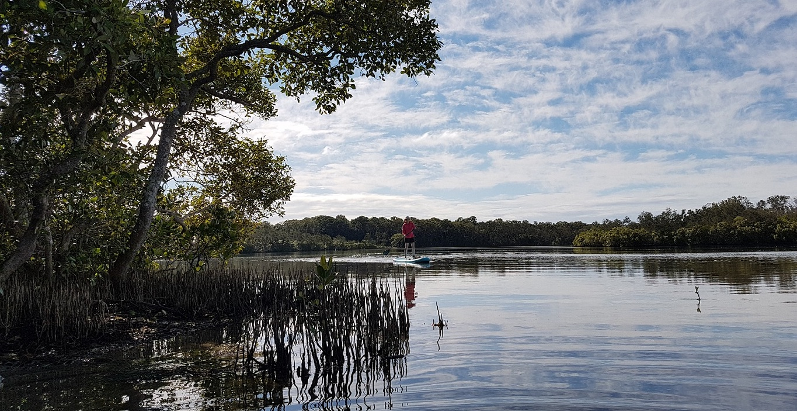

We work on balancing the conservation of marine ecosystems with human uses of the oceans
Welcome to the lab webpage of Associate Professor Chris Brown from the Institute of Marine and Antarctic Studies, Tasmania.

The future of ocean and coastal biodiversity is uncertain. This uncertainty threatens humanity’s place on the blue planet. We urgently need to adapt human uses of the ocean to conserve its ecosystems and ensure it continues to provide us with food, energy, recreation, clean water and clean air.
We are marine scientists who use quantitative tools to inform environmental decisions in the oceans. We do this by bringing ecological complexity to the planning tools used to inform decision making. We work with decision makers to provide quantitative advice on ocean and coastal conservation and fishery management. Our tools of choice are computer programming, mathematical models and statistical analysis. These tools allow us to work with complex datasets to find solutions for ocean management.
We specialize in the R programming language and teach R to others.
Chris’ teaching resources are on this site and are open-access
Read more about our research team or our research on our blog.
Check out opportunities for prospective research students.
Current projects
Below are a few key funded current projects. We work on a diverse range of ocean science topics and the list here is not comprehensive.
Read more about our research projects in the blog and our students’ research projects.